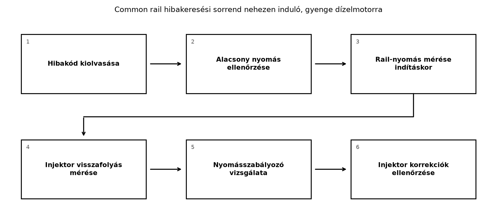

Egy dízelautó hidegen nehezen indul, melegen gyenge, néha fekete füstöt ereszt. A rendszerteszter szerint a „rail-nyomás túl alacsony”, vagy az injektorok korrekciós értékei szélső tartományba kerültek. Ilyenkor a hiba lehet egyszerű szűrő, levegő a szívóági csőben, kopott injektor vagy a nagynyomású szivattyú. Ebben az alfejezetben megtanuljuk, hogyan dolgozzuk fel a dízeltüzelőanyag-rendszer hibáit, hogyan mérjük a szállításkezdetet, a rail-nyomást, az injektorok visszafolyó mennyiségét, és hogyan vizsgáljuk a szivattyú-porlasztó egységet (PDE) és az EDC-rendszert.
Képzeljünk el egy common rail dízelt. A tankban egy elektromos tápszivattyú dolgozik, a motorra szerelt nagynyomású szivattyú egy közös csőbe (rail) nyomja az üzemanyagot, amelyen nyomásérzékelő és szabályozószelep ül. A railből négy, elektronikusan vezérelt injektor kapja az üzemanyagot. A diagnosztikai műszeren egyszerre látjuk a kért és a tényleges rail-nyomást, az injektorok korrekciós értékeit, a szivattyú vezérlő jelének kitöltési tényezőjét. A fizikai méréshez le kell választani az injektorok visszafolyó csövét, és mérni a visszafolyó üzemanyag mennyiségét. Az alábbi folyamatábra a hibakeresés sorrendjét szemlélteti.

A folyamatábra lépéseit a későbbi hibakeresési esetben is használjuk.
Definíció. A dízeldiagnosztika során a tüneteket három fő területre bontjuk: alacsony nyomású oldal (tankbeli tápszivattyú, szűrő, szívócsövek), nagynyomású oldal (nagynyomású szivattyú, rail, injektorok), valamint szabályozás (EDC vezérlő, jeladók, beavatkozók, kódolás).
Definíció. A szállításkezdet (start of delivery) az az időpont, amikor a befecskendező szivattyú vagy a szivattyú-porlasztó egység elindítja az üzemanyag-adagolást a nagynyomású cső felé. A befecskendezési szög (injection timing) a befecskendezés kezdetének szöghelyzete a főtengely felső holtpontja (TDC) előtt vagy után fokban. A statikus szög a berendezés beszerelési, mechanikus időzítése; a dinamikus szög a tényleges, működés közbeni érték, amelyet nyomásjelből vagy elektromos vezérlésből mérünk.
Összefüggés. A befecskendezési szög hibája befolyásolja a gyulladást, a zajt, a füstölést és a teljesítményt. Túl késői befecskendezés: fehér vagy fekete füst, gyenge teljesítmény, magas kipufogógáz-hőmérséklet. Túl korai befecskendezés: erős égési zaj (dízelkopogás), magas égési csúcsnyomás, esetleg megnövekedett NOx-kibocsátás. A pontos szög a gyártói adat, és a motor fordulatszámával, terhelésével változik.
Definíció. A nyomáshullám-elemzés a befecskendező csőben terjedő nyomáshullámok mérése piezoelektromos nyomásérzékelővel. A befecskendezéskor a nyomáshullám a fúvóka felé halad, visszaverődik, és a hullámok interferálhatnak. A mért görbéből meghatározható a szállításkezdet, a fúvóka nyitási nyomása és a hullámforma. Ezt a módszert főként hagyományos soros vagy elosztó befecskendező rendszereknél alkalmazzák.
Definíció. A common rail visszafolyó mennyiség (return flow) az injektorok belső szivárgásából és a nyomásszabályozó visszavezetéséből származó üzemanyag-mennyiség időegységenként. A kopott injektor túl nagy belső szivárgása csökkenti a rail-nyomást, és indítási nehézséget okozhat.
Definíció. A PDE (Pumpe-Düse-Einheit, szivattyú-porlasztó egység) hengerenkénti befecskendezési rendszer, amelyben a szivattyúelem és a porlasztó egy egységben van, és a vezérműtengely bütyke működteti.
Definíció. Az EDC (Electronic Diesel Control) elektronikus dízelmotor-szabályozó rendszer, amely a jeladók (fordulatszám, pedálállás, hűtővíz-hőmérséklet, légtömeg, rail-nyomás stb.) jelei alapján szabályozza a befecskendezési mennyiséget, a befecskendezési szöget és a rail-nyomást.
A dízelmotor befecskendező rendszere nagy pontosságú hidraulikus rendszer. A régebbi dízelekben nem minden hiba látható az EOBD-ben, mert az EOBD csak a kibocsátást befolyásoló hibákat jelzi. Ezért a diagnosztika gyakran nem fedélzeti mérésekkel kezdődik: előnyomás-mérés, visszafolyási mérés, porlasztóvizsgálat, nyomáshullám-elemzés.
Fordulatszám és TDC jel mérése. A szállításkezdet méréséhez referenciajelet kell venni. Modern rendszereknél ezt a főtengely- és vezérműtengely-jeladó jele adja, régebbi rendszereknél optikai vagy mágneses jeladót szerelünk a főtengelyre vagy a szivattyútengelyre. A nyomáshullám-jelhez viszonyítva kapjuk meg a befecskendezési szög fokát. A mérést az 1. henger felső holtpontjához (TDC) kalibráljuk.
A nyomáshullám-elemzés során a befecskendező csőre szerelt piezoelektromos érzékelő jele az oszcilloszkópon: az adagolási nyomás emelkedése, a fúvóka nyitási csúcsa, majd a hullámok. A mérési görbét a gyártói specifikációval vetjük össze. A görbe emelkedésének kezdete a szállításkezdet, a csúcs a fúvóka nyitási nyomásához kötődik.
Porlasztóvizsgálat próbapadon. A porlasztócsúcsot (fúvókát) leszereljük, és próbapadra tesszük. A próbapad kézi vagy motoros szivattyúval nyomást épít, a nyomásmérőn leolvassuk a nyitónyomást, ellenőrizzük a porlasztási képet, a csepegést és a tömítettséget. A nyitónyomás jellemzően 150–300 bar között van (ellenőrizendő: gyártói adat). A porlasztási képnek egyenletes, kúpos ködnek kell lennie, csepegés nélkül.
Figyelem. A porlasztósugár bőrbe hatolva súlyos, akár amputációhoz vezető sérülést okoz: a kezet soha ne tartsuk a sugár útjába, a fúvókát zárt, átlátszó védőburkolatú, elszívott gyűjtőedénybe porlasszuk, védőszemüveget és vegyszerálló kesztyűt viseljünk; a ködöt ne lélegezzük be (tűzveszély, szikra és nyílt láng kizárva). Sugársérülés gyanújánál azonnal orvoshoz kell fordulni.
PDE vizsgálat. A PDE egységekben a szivattyú és a porlasztó egy egységben van, ezért a próbapadon csak magasabb nyomású vizsgálóberendezéssel (PDE-próbapad) lehet vizsgálni, vagy a motoron mért visszafolyási és üzemanyag-nyomás értékek alapján. A hengerenkénti PDE-k cseréjénél be kell kódolni a korrekciós értékeket.
A common rail rendszer diagnosztikai sorrendje a következő (a folyamatábra is ezt szemlélteti):
Alacsony nyomású oldal. A tankban lévő elektromos szivattyú jellemzően 3–5 bar nyomást ad (ellenőrizendő: gyártói adat). A szűrő előtt és után mért nyomáskülönbség nő, ha a szűrő eldugult. A szívási oldali levegőbeszivárgás instabil járást okoz. A mérést nyomásmérővel vagy diagnosztikai műszerrel (üzemanyag-előnyomás paraméter) végezzük.
Rail-nyomás mérése. A diagnosztikai műszer mutatja a kért és a tényleges rail-nyomást. Indításkor a rail-nyomásnak gyorsan fel kell épülnie a minimális indítási nyomásra (például 250–300 bar, ellenőrizendő). Ha a szivattyú vagy a nyomásszabályozó hibás, a nyomás nem éri el a kért értéket. A nyomásszabályozó szelepet (DRV) az ECU elektromos jellel (PWM) vezérli; a hiba gyakran a szelep tömítetlensége vagy a vezérlés hibája.
Injektor visszafolyó mennyiség mérése. Szétválasztjuk a visszafolyó csövet az injektoroknál, és mérőedényekbe gyűjtjük az üzemanyagot. A motort indítóval forgatjuk, vagy járó motor mellett mérünk. A megengedett érték rendszer- és üzemállapotfüggő (tanulási példa: 25 ml/perc hengerenként); a hengerek közötti arányt is értékeljük (ellenőrizendő: gyártói eljárás). A megnövekedett visszafolyás belső tömítetlenségre utal. A mérési eljárást a Gyakorlati útmutató tartalmazza.
Injektor-korrekciók. A modern EDC az injektorok gyártási szórását egyedi kódolási értékekkel (IMA vagy QR kód) kompenzálja. Ha injektort cserélünk, be kell kódolni a korrekciós értéket, különben durva járás, kopogás vagy megnövekedett fogyasztás lehet.
Nagynyomású szivattyú és szabályozószelepek. A szivattyú kopása alacsony rail-nyomást okoz teljes terhelésnél. A szívóoldali mennyiségszabályozó (VCV) a bemenő mennyiséget szabályozza; ha beragad, a nyomás nem szabályozható. A nyomásoldali szabályozó (PCV/DRV) a rail nyomást engedi le. Mindkettőt elektromos jellel (PWM) vezérli az ECU; diagnosztikai műszerrel a vezérlési kitöltési tényezőt és a tényleges nyomást követhetjük.
1. példa – Injektor visszafolyó mennyiség kiértékelése. Egy common rail motor indításkor a kért rail-nyomás 300 bar, de a tényleges csak 180 bar. A visszafolyó mérésnél a következő értékeket kapjuk: 1. henger 20 ml/perc, 2. 15 ml/perc, 3. 18 ml/perc, 4. 120 ml/perc. Mekkora a teljes visszafolyás, és melyik injektor gyanús?
Számítás. Teljes visszafolyás: . A 4. henger visszafolyása (120 ml/perc) sokkal nagyobb, mint a többi (15–20 ml/perc). A gyártói határérték például 25 ml/perc hengerenként (ellenőrizendő); a 4. injektor belső tömítetlen, ez okozhatja a rail-nyomás esését. Cserélni kell az injektort. ∎
2. példa – Befecskendezési szög számítása nyomáshullám-elemzésből. Egy hagyományos elosztó befecskendező rendszerű dízelen a referenciajelet 10 000 Hz mintavételi frekvenciával rögzítjük. A referenciajel az 1. henger TDC-je előtt 30°-nál jelentkezik (jelölő a lendkeréken). A jel és a nyomásemelkedés kezdete között 12 minta telik el. A motor fordulatszáma 2000 1/min. Mekkora a mért befecskendezési szög? (A példa egyszerűsített: 1 minta = 1,2°, a ±1°-os tűréshez ennél jóval nagyobb, legalább 50 kHz-es mintavétel kell.)
Számítás. Mintavételi idő: . Fordulatszám: , így egy fordulat ideje . A szög: . A nyomásemelkedés a referenciajel után -kal érkezik, ezért a befecskendezés -kal TDC előtt kezdődik. A gyártói specifikáció például TDC előtt (ellenőrizendő); a mért érték túl korai, ezért a szivattyú időzítését korrigálni kell, vagy a dinamikus időzítő hibás. ∎
Hibás példa. Valaki a nyomáshullám-elemzésnél a TDC jelet nem kalibrálta, és a nyomáshullám csúcsát vette szállításkezdetnek, nem az emelkedés kezdetét. Ez félrevezető, mert a csúcs a fúvóka nyitásához kötődik, ami a szállításkezdet után van. A helyes mérés az emelkedés kezdetét veszi alapul.
Előírás. A dízeltüzelőanyag-rendszeren végzett munka előtt a nagynyomású részt nyomásmentesíteni kell a gyártói utasítás szerint. A nagynyomású üzemanyagsugár bőrbe hatolva súlyos sérülést okoz.
Előírás. A befecskendezési rendszer javításánál csak a gyártó által előírt alkatrészeket és kódolási eljárást szabad alkalmazni; az injektorok korrekciós kódjait a vezérlőegységbe be kell írni (ellenőrizendő: gyártói adat).
Előírás. Az EOBD/OBD rendszer a dízeleknél a kibocsátással összefüggő hibákat jelzi; a diagnosztikai hibakódok értelmezése az ISO 15031 szabvány alapján történik (a szabvány pontos száma ellenőrizendő).
A dízeldiagnosztikai méréseknél mindig a gyártói értékekhez viszonyítunk: - Rail-nyomás alapjáraton, indításkor, teljes terhelésen (példaértékek) - Injektor visszafolyó mennyiség (ml/perc) - Alacsony nyomás (bar) - Szállításkezdet szögértéke (°) - Porlasztó nyitónyomása (bar) - Vezérlési jelek (PWM kitöltési tényező %)
A méréseket dokumentálni kell, és a hibakódok törlését csak a javítás után szabad elvégezni, utána próbaúttal ellenőrizni.
Eset: Nehezen induló, gyenge dízelmotor
Egy öreg common rail dízelautó hidegen nehezen indul, melegen gyenge, néha fekete füst. A tulajdonos szerint a szűrő cseréje volt esedékes, de nem segített. A műhelyben a következőket végezzük:
Cél: Az injektorok belső tömítetlenségének kimutatása.
Jármű- és adatazonosítás: Kiolvassuk a gyártói adatokat (motorkód, rendszer típusa, injektor-korrekciós kódok).
Szükséges szerszámok, műszerek: mérőedények (50–100 ml-es, ml osztással), csatlakozó-leszorító szerszám, diagnosztikai műszer, gyűjtőedény, tömítések, nitril kesztyű, védőszemüveg.
Biztonsági korlát. A feladat tanműhelyi környezetre, oktató felügyeletére és a gyártói javítási utasítás betartására vonatkozik; a megadott értékek tanulási példák.
Munkavédelmi és környezetvédelmi lépések: A motor járása közben a forgó részek és forró felületek miatt óvatosan dolgozunk. Az üzemanyag-gőz tűzveszélyes, nyílt láng és szikra tilos. A kifolyt üzemanyagot veszélyes hulladékként gyűjtjük. A nagynyomású rendszeren végzett munka előtt a gyártói nyomásmentesítést el kell végezni; a visszafolyó mérésnél a rendszer nyomása alacsony, de a motortér biztonságát meg kell őrizni.
Az (a) részábrán a vastag nagynyomású csöveket (⊘) nem bontjuk; csak a gyári visszafolyó vezetéket választjuk le és zárjuk le, az injektorok visszafolyó csonkjaira átlátszó tömlőkön át azonos magasságban álló mérőhengerek kerülnek. A (b) részábra az 1. kidolgozott példa leolvasását mutatja: a 4. injektor 120 ml/perc értéke messze a hengerenkénti példahatár (25 ml/perc, ellenőrizendő) fölött van. A HTML-változatban a mérőhengerek töltődése lejátszható, és a hibás injektor kiválasztható.
Mérés lépései:
Dokumentálás: Munkalapon rögzítsük a mért értékeket, a határértéket, az elvégzett javítást.
Hiba 1. A nyomásszabályozó szelep elektromos csatlakozóját leválasztva a rendszert nyomás alatt bontja. Helyes gyakorlat: Mindig a gyártói nyomásmentesítés után, védőkesztyűben és védőszemüvegben dolgozunk.
Hiba 2. Az injektor visszafolyó mérésénél a motort nem a megadott ideig járatja, ezért az értékek nem összehasonlíthatók. Helyes gyakorlat: Pontosan azonos ideig mérünk, és a gyártói határértékkel vetünk össze.
Hiba 3. Az EOBD hibakódok alapján azonnal injektort cserél, pedig a hiba a szűrőben van. Helyes gyakorlat: Először az alacsony nyomású oldalt és a rail-nyomást ellenőrizzük, mielőtt drága nagynyomású alkatrészeket cserélnénk.
Hiba 4. Az injektor korrekciós kódját nem írja be a vezérlőegységbe csere után. Helyes gyakorlat: A kód beírása kötelező, különben durva járás és magas fogyasztás jelentkezhet.
A válaszok a Megoldások részben.
1. feladat (A). Sorolja fel a common rail diagnosztika három fő vizsgálati területét, és adjon meg mindegyikhez egy tipikus mérést.
2. feladat (A). Egy injektor visszafolyó mérésénél az alábbi értékeket kapjuk: 1. henger 25 ml/perc, 2. 28 ml/perc, 3. 33 ml/perc, 4. 22 ml/perc. A gyártói határérték 30 ml/perc. Melyik injektor hibás?
3. feladat (B). Egy hagyományos dízelen a szállításkezdetet nyomáshullám-elemzéssel mérjük. A referenciajelet 10 000 Hz mintavételi frekvenciával rögzítjük; a jel az 1. henger TDC-je előtt 30°-nál jelentkezik. A jel és a nyomásemelkedés kezdete között 12 minta telik el. Mekkora a befecskendezési szög (TDC előtt), ha a motor fordulatszáma 2000 1/min? (Emlékeztető: 1 fordulat = 360°, az idő a minták száma / mintavételi frekvencia.)
4. feladat (B). Egy common rail motor indításkor a rail-nyomás 260 bar, de a minimális indítási nyomás 300 bar (példaérték). Milyen okok lehetnek? Hogyan ellenőrzi az alacsony nyomású oldalt?
5. feladat (C). Hasonlítsa össze a hagyományos elosztó befecskendező és a common rail rendszer diagnosztikai lehetőségeit. Miért kevésbé jelentős a nyomáshullám-elemzés a common railnél?
6. feladat (D, gyakorlati hibakereső). Egy dízelautó melegen gyenge, füstöl. A diagnosztikai műszer szerint a rail-nyomás alacsonyabb a kértnél, de az injektorok visszafolyása normális. A tápszivattyú cseréje már megtörtént. Melyik komponensre gyanakszik? Hogyan igazolná?
Önellenőrzés – válaszok:
1. feladat megoldása. Alacsony nyomású oldal (előnyomás mérése), nagynyomású oldal (rail-nyomás mérése), szabályozás (injektor visszafolyás és korrekciók).
2. feladat megoldása. A 3. henger visszafolyása (33 ml/perc) meghaladja a 30 ml/perc határértéket, és a többi hengerhez (22–28 ml/perc) képest is kiugró, így a 3. injektor belső tömítetlen.
3. feladat megoldása. Mintavételi idő: . Fordulatszám: , egy fordulat ideje . A szög: . A nyomásemelkedés a referenciajel (30° TDC előtt) után -kal érkezik, így a befecskendezés -kal TDC előtt kezdődik. A gyártói specifikáció például TDC előtt; a mért érték túl korai, állítani kell.
4. feladat megoldása. A rail-nyomás nem éri el az indítási küszöböt. Okok: gyenge tápszivattyú, eldugult szűrő, levegő a rendszerben, nagynyomású szivattyú kopott, nyomásszabályozó tömítetlen, injektor túl nagy visszafolyás. Alacsony nyomású oldal ellenőrzése: előnyomás mérése (például 3,5 bar), szűrő állapota, szívó ág tömítettsége.
5. feladat megoldása. A hagyományos elosztó befecskendezőnél a szállításkezdet mechanikus időzítésű, a nyomáshullám-elemzéssel jól mérhető a tényleges időzítés. A common railnél az időzítést elektronika vezérli, a nyomás és a befecskendezési időtartam sokkal rugalmasabb, a nyomáshullámok a railben és a csövekben kevésbé információsak, mert a nyomás a railben állandó, és az injektorok egyenként nyitnak. A common rail diagnosztikában a rail-nyomás és az injektor-visszafolyás a fő.
6. feladat megoldása. Ha a visszafolyás normális és a tápszivattyú új, a nagynyomású szivattyú kopott vagy a nyomásszabályozó szelep hibás. Ellenőrzés: a rail-nyomás tényleges/kért eltérése teljes terhelésnél, a nyomásszabályozó PWM jelének vizsgálata oszcilloszkóppal, a szivattyú visszafolyó mennyisége (ha van külön cső), vagy a szivattyú kimenő nyomásának mérése.
A dízeldiagnosztikában a tüneteket alacsony nyomású, nagynyomású és szabályozási okokra bontjuk. A nem fedélzeti mérések (előnyomás, visszafolyó mennyiség, porlasztóvizsgálat, nyomáshullám-elemzés) a régebbi rendszereknél, a common railnél pedig a fedélzeti adatok (kért/tényleges rail-nyomás, injektor-korrekciók, vezérlőjelek) kiegészítik egymást. Az injektorok visszafolyó mennyiségét mérve a belső tömítetlenség kimutatható. A hibakeresés során először az alacsony nyomású oldalt, majd a rail-nyomást, a visszafolyást, a szabályozószelepeket és a kódolást ellenőrizzük. A nagynyomású rendszeren csak a gyártói nyomásmentesítés után szabad dolgozni; a nagy nyomású üzemanyagsugár bőrbe hatolva súlyos sérülést okoz. A gyártói javítási adatok elsőbbséget élveznek. A PDE egységek vizsgálata speciális próbapadot igényel, cseréjüknél korrekciós kódot kell beírni. Továbbvitt eredmény. A common rail vizsgálati sorrendet (hibakód, alacsony nyomás, rail-nyomás, visszafolyás, szabályozószelepek, kódolás) használjuk a Gyakorlati vizsgafelkészülés komplex hibakeresési feladataiban (és az outline szerinti további felhasználó alfejezetekben). ∎
Forrástípusok: gyártói javítási utasítások és diagnosztikai kézikönyvek, a Bosch/Denso stb. oktatóanyagai, az ISO 15031 szabvány az OBD-re, a járművek kipufogógáz-kibocsátására vonatkozó hatályos előírások.
Ellenőrizendő: a rail-nyomás értékei (indítási, alapjárati, teljes terhelési), az injektor visszafolyási határértékek, a nyomásszabályozó és mennyiségszabályozó vezérlési paraméterek, a porlasztó nyitónyomása, a PDE vizsgálati adatok, a szűrőcsere-intervallum, a korrekciós kód beírásának művelete.